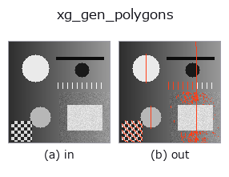

xldgeom op• データ種: contour → contour
• 呼び出し: fullseye.apply(img, "xg_gen_polygons", a=0.5, b=0.5) (2-D は 1 画像 + 2 スカラつまみ a,b∈[0,1] のモデル)
• HALCON 相当: gen_polygons_xld(意味・パラメータは HALCON リファレンスが参考になる)

*図は合成の入力 128×128 で実際に走らせた出力。左が入力、右が出力。点群は上から見た散布(明るさ = z)、1-D 列は折れ線、体積は z 方向の最大値投影、動画は中央フレーム、複素画像は振幅、絵にならない返り値は値そのもの。*
つまみ a を振る(0.1 / 0.5 / 0.9、もう一方は既定):
▸ xg_gen_polygons: knob a sweep (docs site)
*つまみ b は出力を変えない(実測: 0.1 / 0.5 / 0.9 で同一)。*
段階(前置きの op → この op。左から順):
▸ xg_gen_polygons: stages (docs site)
別の画像でも(合成シーン / 写真 / 硬貨。上段が入力、下段がその出力。つまみは既定):
▸ xg_gen_polygons: other inputs (docs site)
Douglas-Peucker による折れ線の間引き。eps = a × contour 外接矩形の対角長。
各輪郭を Ramer-Douglas-Peucker 法で間引いて頂点数の少ない折れ線(多角形)に
する。始点と終点は必ず残し、区間の弦から最も離れた点の距離が `eps` を
超えればその点を採用して再帰的に分割する。`eps` は輪郭ごとに、その輪郭の
bbox の対角長 `hypot(Δrow, Δcol) に a`([0,1] に clip)を掛けた値。
`a=0 で eps=0(弦上に完全に乗る点だけ落ちる)、a` を上げるほど粗く
なり、`a=1 では両端の 2 点だけになる。b` は未使用。
返り値は `{"shape", "cs"}` の輪郭辞書。点が 3 個未満の輪郭はコピーのまま。
閉輪郭(先頭=末尾)は始点と終点が同じ点なので、`a` が大きいと 2 点(同一点)に
退化し、面積や向きの特徴量が 0 になる。閉輪郭の形を保ちたい場合は `a` を
小さめにする(実測では半径 5〜8 の楕円 101 点が `a=0.05` で 9 点)。
間引きは元の点の部分集合を返し、新しい点は作らない。後段の `xg_area_center`
や `xg_regress_contours` の計算量を減らす前処理、折れ線の角(頂点)検出に。
• サンプルデータ カタログ(DL URL / ライセンス) — 2-D は skimage.data(BSD/public)+ 合成、3-D は実データ源(Stanford/PDS 等)の DL URL。
• 演算子の来歴・参考文献 — この op 族の元になった研究/手法の出典。
• アルゴリズムの正典(著者・年)と用途は上記ファミリ使い方ガイドに記載。
下のプログラムは実際に走ることを確かめてある(図と同じ入力)。Studio のヘルプではこのブロックがボタンになり、その場で読み込んで実行できる。
threshold 0.50 0.50 sk_find_contours 0.50 0.50 xg_gen_polygons 0.50 0.50
▸ Load this pipeline · Load & run
• gallery2d_geometry — py -3.11 examples/gallery2d_geometry.py
contour を入力に取れる)identity · select_contours · smooth_contours · fit_line_contours · contours_to_region · count_contours · total_length · select_contours_xld
xldgeom)xg_moments · xg_area_center · xg_eccentricity · xg_orientation · xg_elliptic_axis · xg_height_width_ratio · xg_regress_contours · xg_clip_contours
*Provenance: ops.py — 2D operator registry. この per-op ノートは tools/opdocs.py md が自動生成(手編集しない)。*
© 2026 Kazufumi Furuse — Fullseye operator documentation. Licensed under Apache-2.0.
{kind=link}
{kind=link}
{kind=link}